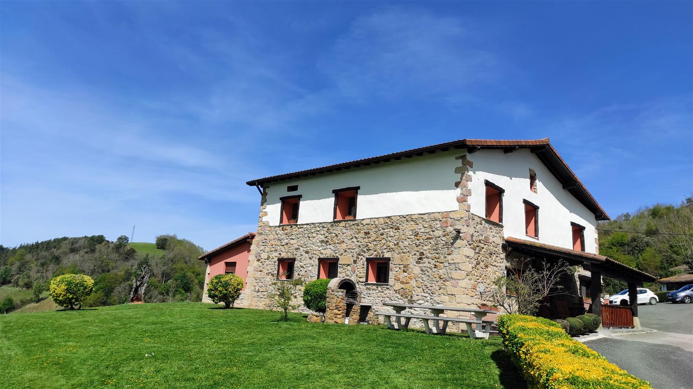

Casa rural y apartamentos · Getaria
Un caserío entre viñas, a 3 km de Getaria
★ 5 de 5 · 102 opiniones en GoogleWifi y cuna gratis

¿Cuántos sois?

Os encaja
Apartamento 1
90 m² · 2 habitaciones dobles · 2 baños · jardín con barbacoa
110–130 € / noche · IVA incluido
Alojamientos
Se alquila entero, cada uno con su entrada
| Comparar | Casa rural | Apartamento 1 | Apartamento 2 |
|---|---|---|---|
| Superficie | 95 m², planta baja | 90 m², rústico | 60 m² |
| Habitaciones | 4 dobles | 2 dobles | 1 amplia, de matrimonio |
| Baños | 2 | 2 | 1 |
| Plazas | 8 + 1 supletoria | 4 + 2 supletorias | 2 + 1 supletoria |
| Cocina | Completa, sala con tele | Completa, sala con tele | Cocina-comedor |
| Temporada alta | 225 € | 130 € | 95 € |
| Resto del año | 215 € | 110 € |
Por noche, IVA incluido. Temporada alta: de abril a septiembre, puentes y festivos. Estancia mínima de 2 noches. Cama supletoria: 10 € la noche.


- Se alquila entera
- Acceso independiente
- Jardín
- Barbacoa
- Calefacción central
- Wifi gratis
- Cuna gratis
- No se admiten animales
La costa
Getaria, Zarautz y Zumaia, a un paso
Os quedáis en el monte, tranquilos, y en cinco minutos estáis en la playa o en el puerto.
Barrio Meaga, entre viñedos de txakoli.
El puerto y el pescado a la parrilla.
Una playa de 2 kilómetros.
El flysch e Itzurun.
La Concha y la parte vieja.
Opiniones · 5 de 5 en Google
«Sin duda, seguiremos volviendo»
«Los dueños desde que reservamos sólo nos pusieron facilidades para todo. Cuando llegamos a la casa superó nuestras expectativas.»
Alfonso M. · grupo de 10
«Un lugar encantador, unas vistas increíbles, tranquilo y apartado pero muy bien comunicado con Zarautz y Getaria.»
Is M. · familia de 9
«La casa, como siempre, perfecta: muy limpia, cuidada y sin faltarle ningún detalle. Además, las vistas son espectaculares.»
Copri · repiten
Lo que más repiten quienes vienen: que María Jesús y Carlos están pendientes de todo y os aconsejan qué visitar por la zona.
Cómo llegar
Barrio Meaga, Getaria
- Dirección
- Caserío Abeta Berri, barrio Meaga · 20808 Getaria
- Teléfonos
- 635 753 955 · 943 133 960
- a.berri@hotmail.com
- Licencia turística
- XSS00046